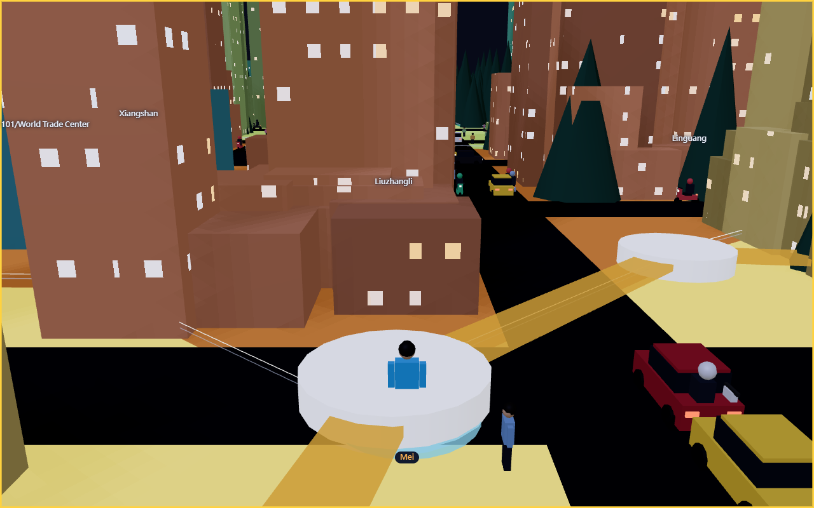
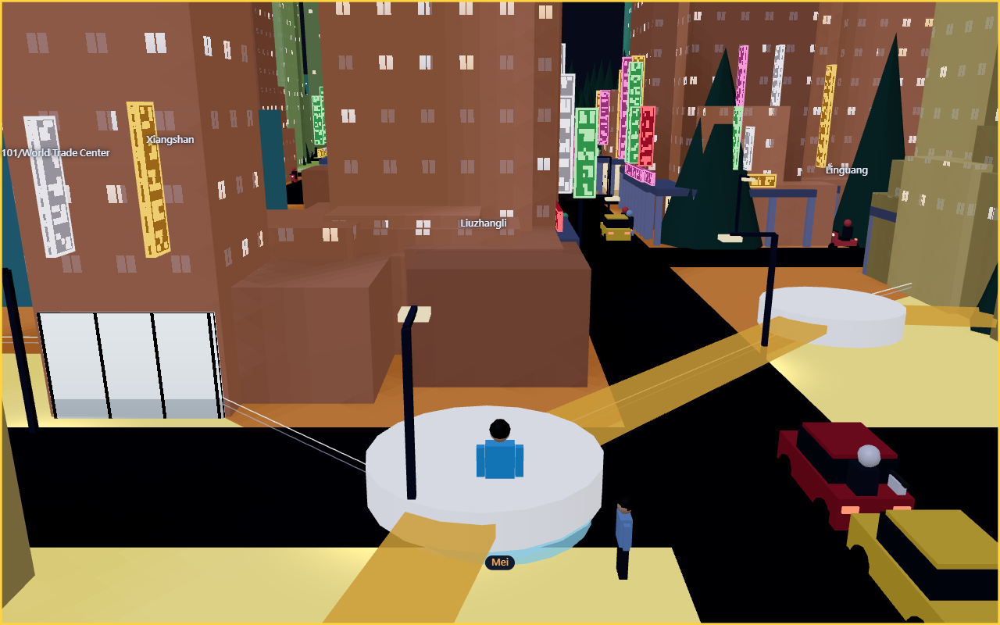
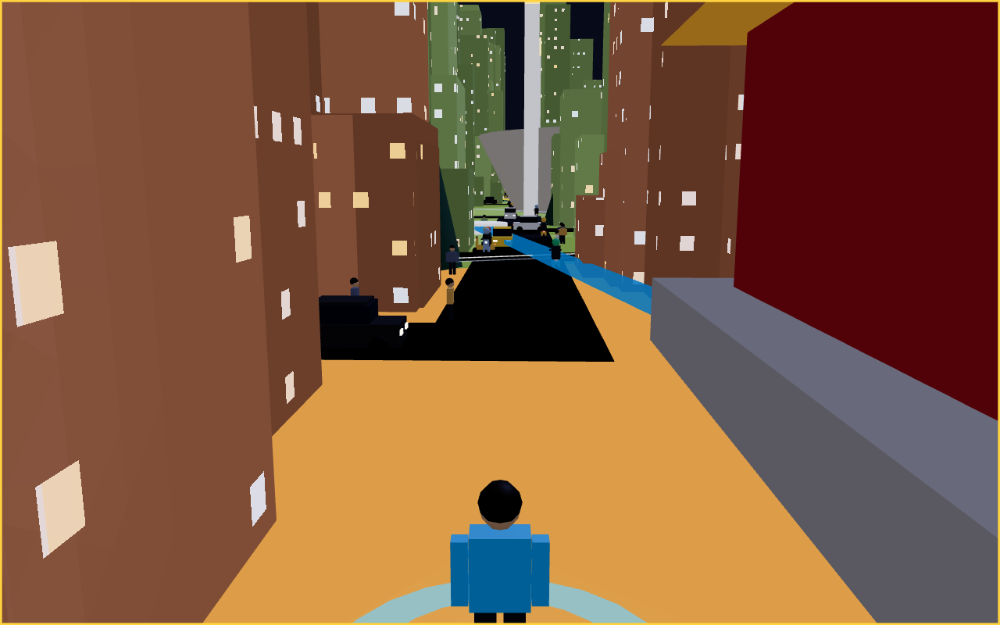
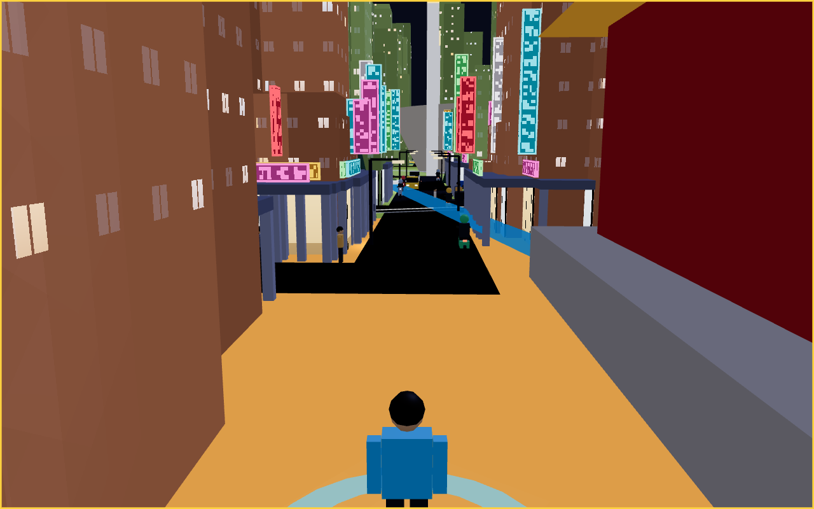
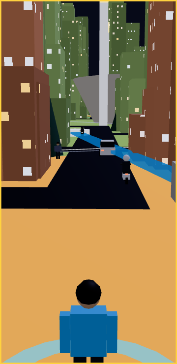
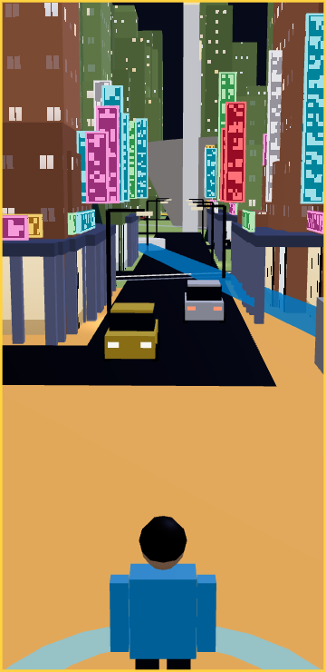

街景細節設計稿
city-3d 任務 11 · 2026-11-24 · Claude Code · 截圖來自原型 prototype/street-detail.html，用的是遊戲本身的 3D 城市和真實資料（2019 Q2）
走路模式下，角色周圍約 42 單位內的街道會多出四種細節：騎樓、招牌、路燈，還有更細的窗戶。離開這個範圍、空中視角和整體地圖都完全不變。
不新增任何按鈕、文字或操作。細節是固定的，沒有閃爍或動畫，所以減少動態效果的設定下也一樣。所有顏色都放在 Token_File，招牌上只有抽象的方塊圖案，不是真的字，也沒有任何店名或品牌。
1. 前後比較：大安區（1280 × 800）


同一個位置、同一個視角。右邊可以看到建築側面的直立招牌、遠處騎樓的柱子和頂板，以及路邊的路燈和燈下光暈。
2. 萬華區龍山寺站附近（1280 × 800）


兩側建築一樓是亮著的店面，前面是騎樓頂板和一排柱子。上面的橫招牌和直招牌往街道伸出，近處的窗戶分成兩格，有窗框。
3. 手機版（360 × 740）


手機上的細節和電腦版一樣。這張截圖用的是原型的 42 單位範圍；正式版在低畫質（手機預設）時會縮小到 25 單位，也不畫路燈光暈（見第 6 節）。
4. 四種細節
| 細節 | 放在哪裡 | 樣子 |
|---|---|---|
| 騎樓 | 建築面向街道，而且和路邊還有至少 0.6 單位空間的那一面 | 一樓高 1.5 單位的亮店面，有門窗分隔線和較暗的櫃台；店面前方是頂板（最深 1.3 單位，不會超出人行道），外緣每 1.4 單位一根柱子。空間不夠的那一面只有店面，沒有頂板和柱子。 |
| 招牌 | 面向街道的那一面，約一半的面有一條橫招牌；65% 的面有 1 到 2 塊直招牌 | 暗色板子加上亮邊框，裡面是抽象的方塊「字」（不是真的字）。六種霓虹色，每塊招牌由建築位置決定顏色，所以每次經過都一樣。直招牌只出現在二樓以上，高度不會超過屋頂。 |
| 路燈 | 每段街道 2 支，交錯在兩側，離路口有一段距離 | 2.2 單位高的燈桿，燈臂伸向路中央，燈頭是暖白色，地上有柔和的圓形光暈。燈臂比最低的招牌還低，所以不會和招牌撞在一起。 |
| 細緻窗戶 | 鏡頭 25 到 70 單位內的建築（漸變） | 窗戶加上窗框和中間的直條，亮著的窗戶有上亮下暗的窗簾漸層，暖色或冷色依每扇窗而不同；沒開燈的窗戶有一點點反光。店面那一層沒有窗戶。遠處的窗戶和現在完全一樣。 |
新增的顏色 token（放在 tokens.css 的 --city-* 底下）
| Token | 顏色 | 用在哪裡 |
|---|---|---|
--city-sign-0 到 -5 | 招牌的霓虹色（紅、琥珀、青、粉、綠、白） | |
--city-shop-0、-1 | 店面燈光（暖色、冷白色） | |
--city-arcade、--city-arcade-column | 騎樓頂板、柱子（一樓店面照上來，所以稍微發亮） | |
--city-pole、--city-lamp、--city-lamp-glow | 燈桿、燈頭、地上的光暈 |
這些顏色只出現在角色附近的街道上，不代表任何指標，也不會影響地圖顏色的意義（Map_Indicator 還是只看地面和建築的顏色）。
5. 中立性與無障礙
- 招牌上沒有可讀的文字、店名、品牌或政治符號，只有隨機的方塊圖案（
neutrality.md）。 - 沒有閃爍或動畫：產品規則禁止全畫面閃爍，招牌如果會閃也可能讓人不舒服，所以全部是靜態的。減少動態效果的設定下畫面一樣。
- 不新增文字、按鈕或焦點目標，鍵盤操作和螢幕閱讀器的內容都不變。
- 細節只在走路模式出現。不支援 WebGL 的瀏覽器本來就沒有 3D 城市，所以不受影響。
6. 效能
- 角色每走 10 單位，才重新計算一次周圍的細節。全部用 instanced 方塊畫，每種細節只要一次 draw call（共 9 次），每次約 4,200 個方塊和 70 盞路燈。
- 原型重新計算一次要 9 到 12 毫秒，因為每次都掃過全部 4,800 棟建築。正式版會用空間索引，只看附近的建築，目標是 2 毫秒以內。
- 低畫質（手機預設）時，範圍縮小到 25 單位，也不畫路燈光暈。
7. 原型裡看到、正式版要修的地方
- 捷運站的白色圓台上也會出現路燈（大安那張圖）。正式版會讓路燈避開車站周圍。
- 細節的擺放規則會寫成不依賴 three 的純函式，並加上測試：同一個城市每次結果都一樣；路燈只在存在的街道上，而且不在建築裡面；騎樓不會超出人行道；直招牌不會高過屋頂（city-3d Requirement 13.1）。
8. 決定（2026-11-24 核准）
產品負責人核准本設計稿：「核准，A 可以，B2」。A：四種細節和第 4 節的顏色照提案。B2：騎樓柱子和燈桿會擋住角色。
當時的選項
A. 整體樣式：核准這四種細節和第 4 節的顏色嗎？
B. 柱子和燈桿會不會擋路：
- B1（建議）不擋：角色可以直接穿過柱子和燈桿，走路比較順，也不會卡在柱子之間。
- B2 會擋：比較真實，但角色可能在騎樓柱子之間卡住，特別是用手機搖桿的時候。